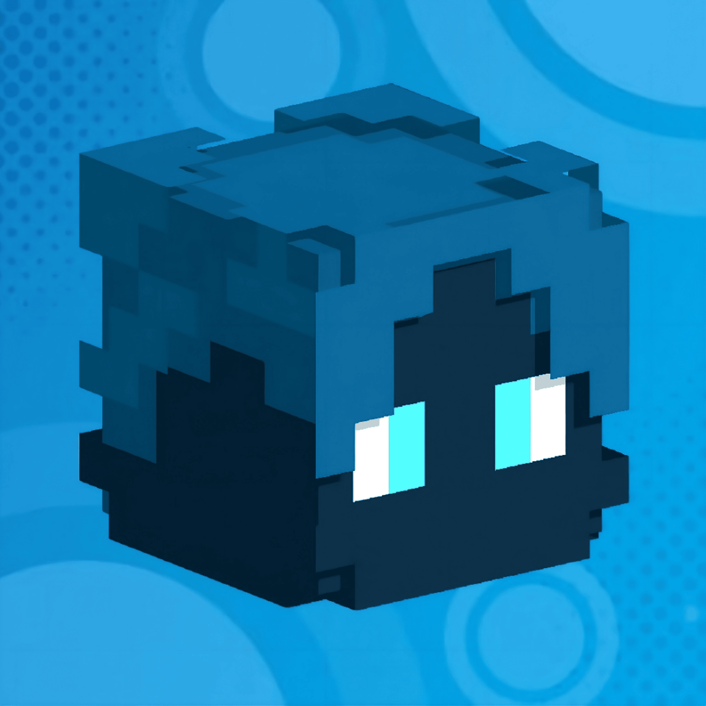

Auto-SprintPlus
A configurable Minecraft Fabric mod focused on smooth automatic sprinting, with a customizable HUD and in-game controls.
YouTuber, Content Creator, Gamer, Developer & Server Developer.
I build Minecraft projects, developer tools, Discord bots and servers — while sharing the journey with the community.

Things I've built, improved, or am currently working on.
A configurable Minecraft Fabric mod focused on smooth automatic sprinting, with a customizable HUD and in-game controls.
A custom Discord bot project built for community and server management. More features coming as the project grows.
New ideas are always in development. Check GitHub and Discord for updates, experiments and releases.
I'm Febreze Gamerz — a creator who enjoys mixing gaming, development and community. From Minecraft mods and server projects to Discord bots and experimental ideas, I like taking something from “what if?” to a working project.
This website is my little corner of the internet for sharing what I'm building, where to find me, and what's coming next.
$ whoami
Febreze Gamerz
$ focus
minecraft / java / discord / servers
$ status
building something cool...
█
Follow the projects, videos and communities.